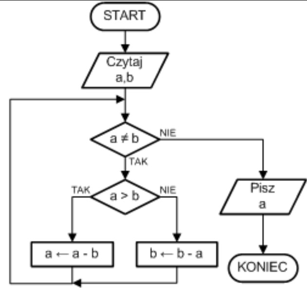

Specyfikacja problemu
DANE
WYNIK
Lista kroków dla algorytmu Euklidesa
Krok 1 Jeśli m=0, to n jest szukanym dzielnikiem. Zakończ algorytm.
Krok 2 r=(n mod m), n=m, m=r. Wracaj do kroku 1
Schemat blokowy
